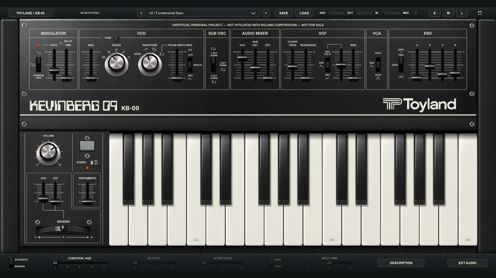
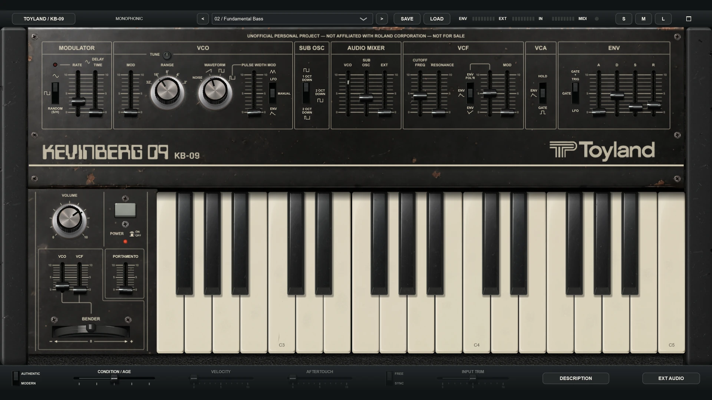
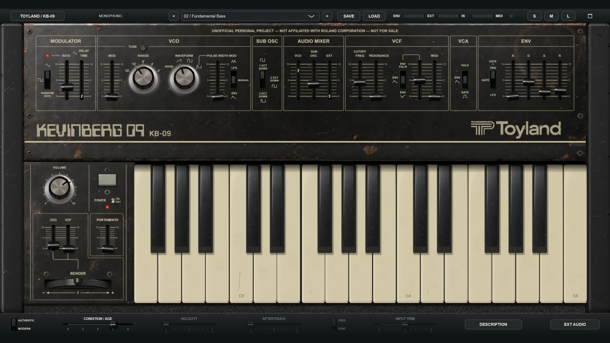
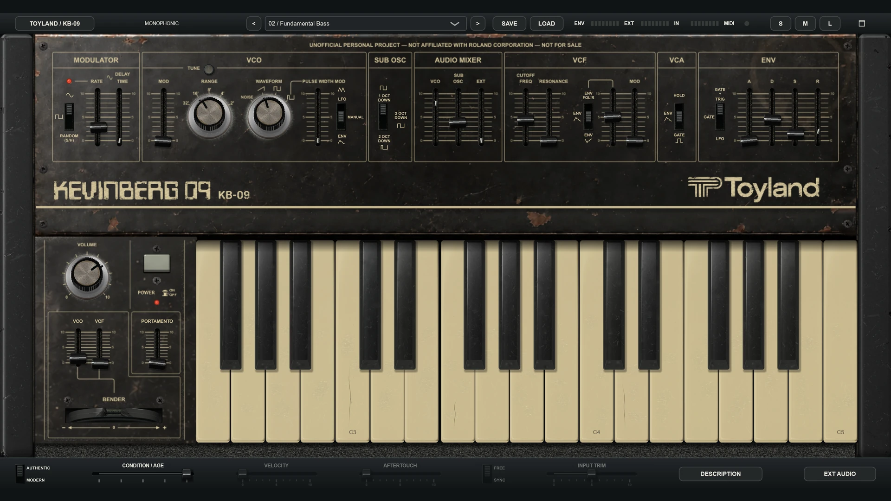

ONE VOICE. PLENTY OF CHARACTER.
Toyland KB-09
FREEFOREVER
A free recreation of Kevin's Roland SH-09,
with a few cool extras.
Windows · macOS · Linux standalone only




AGE changes the sound as well as the appearance.
Watch it age—or pause and choose a condition. This is a visual preview, with no audio.
FAMILIAR FEEL. A FEW COOL EXTRAS.
A little instrument.
A lot to explore.
A single voice, a hands-on panel and a filter that sings. Start with the original-style routing, or switch to Modern for velocity, aftertouch and tempo sync.
- Build your sound
- Saw, square, pulse and noise, a divided sub oscillator, envelope, LFO and resonant low-pass filter.
- Make it your own
- Twenty-four factory presets, MIDI control mapping in standalone, and an AGE setting saved with every patch.
- Bring something else through it
- Filter external audio or use its envelope to move the cutoff, where your host or standalone routing provides an input.
INSIDE THE SOUND
The schematic was
the beginning.
Getting the character meant going beyond the layout of a circuit. We used the SH-09's design as a starting point, then listened, compared recordings and refined the way the model's stages interact.
- 01
Follow the circuit
The oscillator, divided sub and external input feed a mixer, then a resonant filter and amplifier. The envelope and LFO animate that familiar signal path.
- 02
Find the difficult bit
A steady oscillator feeding a self-oscillating filter exposed the challenge: the model's resonance could get pulled too strongly toward the oscillator's pitch during a slow sweep.
- 03
Refine the balance
Different stage headroom and a diode-like feedback limiter helped balance the incoming oscillator against the filter's own tone. The resonance comes from the feedback loop itself.
HOW WE COMPARED THE SOUND
The crucial test
The crucial test put a steady VCO into a self-oscillating filter while its pitch swept slowly past the VCO’s harmonics. The two signals interacted inside the filter, revealing whether its tone stayed steady, changed level or was pulled toward the incoming oscillator.
We compared a collection of SH-09 and KB-09 recordings at different VCO mixer levels, alongside filter-only and oscillator-only recordings, captured at 96 kHz in 32-bit floating point. Listening, waveforms and frequency analysis guided the model toward the hardware’s balance of stable resonance and musical interaction. Matching pitch and relative signal levels made those comparisons more useful than copying slider positions alone.
These are comparisons with one aged SH-09 at a particular resonant setting, not proof of identical behavior at every patch. KB-09 is a circuit-informed approximation; AGE is a creative condition model.
YOUR NEXT SOUND STARTS HERE
Free for everyone,
forever.
Make music, share it with your friends, and enjoy!
Get the latest release
Windows64-bit · Standalone + VST3 macOS12+ · Apple Silicon + Intel · Standalone, AU + VST3 Linuxx86-64 · Standalone onlyDownload the ZIP for your system, extract the whole folder, and open OPEN ME FIRST!.html. No GitHub account is needed to download.
Windows is unsigned; Mac is ad-hoc signed and not notarized. Follow the included installation guide. Linux desktop, audio and MIDI testing on physical hardware remains unverified.
Release notes & all downloads ↗LET'S HEAR WHAT YOU MAKE
Made a cool sound?
Send me your presets!
I'd love to hear what you make with KB-09! Your sound might become a factory preset in the next update.
Share your presetSave your sound as a .kb09 preset, put it in a ZIP and attach it to the submission—GitHub accepts ZIP attachments, but not .kb09 files directly. Tell me about the sound and how you'd like to be credited. Submissions are public and require a free GitHub account.
A LITTLE HELP, IF YOU NEED IT
Get playing.
Bug reports and attachments are public. Hide personal information before posting. Reports require a free GitHub account.